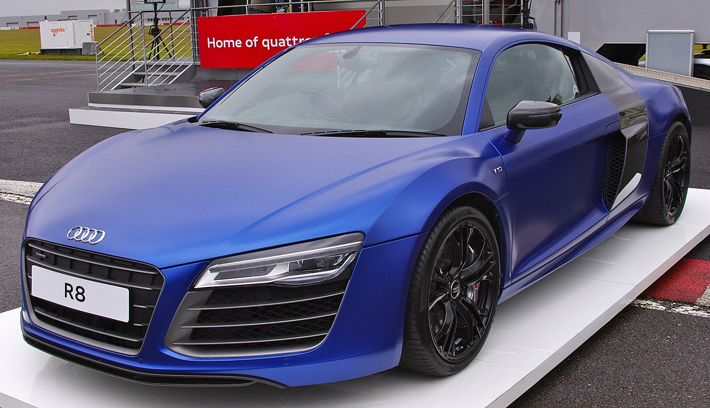
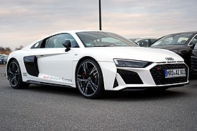

The Audi R8 is a mid-engine, 2-seater sports car, which uses Audi's trademark quattro permanent all-wheel drive system. It was introduced by the German car manufacturer Audi AG in 2006.
The car is exclusively designed, developed, and manufactured by Audi AG's private subsidiary company manufacturing high performance automotive parts, Audi Sport GmbH (formerly quattro GmbH), and is based on the Lamborghini Gallardo and presently the Huracán platform. The fundamental construction of the R8 is based on the Audi Space Frame, and uses an aluminium monocoque which is built using space frame principles. The car is built by Audi Sport GmbH in a newly renovated factory at Audi's 'aluminium site' at Neckarsulm in Germany.
It is also the first production car with full-LED headlamps.
The second generation of the R8 (model code: Type 4S) was unveiled at the 2015 Geneva Motor Show and is based on the Modular Sports System platform shared with the Lamborghini Huracan. The development of the Type 4S commenced in late 2013 and was completed in late 2014 (2015 model year in Europe, 2017 model year in the US). Initial models included the all-electric e-Tron and the V10 5.2 FSI along with the V10 plus. Unlike its predecessor, there was no manual transmission available and the entry-level V8 trim was also dropped. In 2016, the convertible (Spyder) variant was added to the line up which was initially available in the base V10 trim. In mid-2017, the high performance V10 plus Spyder was added to the range. A rear-wheel-drive model called the R8 RWS was introduced.
In 2018 (2020 model year in the US), the R8 received a mid-cycle refresh with mechanical and exterior changes. The newer and more aggressive design language carried over from famous Audi models of the past and its appearance is slightly more angular up front. The refreshed model had substantial performance improvements over its predecessor. The base R8 gets a power boost from 532 hp to 562 hp, while the V10 Plus was renamed V10 Performance Quattro and the engine saw a power increase by 10 hp (7 kW), now up to 612 hp.
The Audi R8 e-tron (2015) was an all-electric version of the second-generation R8. Unlike the earlier 2010 prototype based on the first-generation R8, it actually entered production, but only on a small scale, with less than 100 units sold. It featured a 92-kWh battery.
The Audi R8, based on the Audi Le Mans quattro concept car (designed by Frank Lamberty and Julian Hoenig) first appeared at the 2003 International Geneva Motor Show and the 2003 Frankfurt International Motor Show. The R8 road car was officially launched at the Paris Auto Show on 30 September 2006. There was some confusion with the name, which the car shares with the 24 Hours of Le Mans winning R8 Le Mans Prototype (LMP). Initial models included the R8 4.2 FSI coupé (with a V8 engine) and R8 5.2 FSI coupé (with a V10 engine). Convertible models, called the Spyder by the manufacturer, were introduced in 2008, followed by the high-performance GT model introduced in 2011. The Motorsport variants of the R8 were also subsequently introduced from 2008 onwards. An all-electric version called the e-Tron started development but would only reach production stage when the second generation model would be introduced. 
6-time 24 Hours of Le Mans winner Jacky Ickx described the R8 as "the best handling road car today".
The car received a facelift in 2012 and a new model called the V10 Plus was now added to the range. Production of the Type 42 ended in August 2015.
The second generation of the R8 (model code: Type 4S) was unveiled at the 2015 Geneva Motor Show and is based on the Modular Sports System platform shared with the Lamborghini Huracan. The development of the Type 4S commenced in late 2013 and was completed in late 2014 (2015 model year in Europe, 2017 model year in the US). Initial models included the all-electric e-Tron and the V10 5.2 FSI along with the V10 plus. Unlike its predecessor, there was no manual transmission available and the entry-level V8 trim was also dropped. In 2016, the convertible (Spyder) variant was added to the line up which was initially available in the base V10 trim. In mid-2017, the high performance V10 plus Spyder was added to the range. A rear-wheel-drive model called the R8 RWS was introduced.
Between the two models, this is the one I like better.